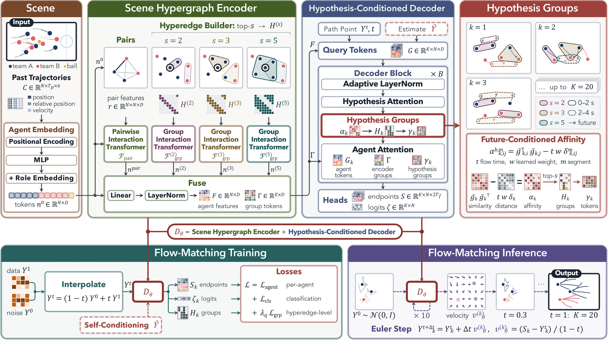
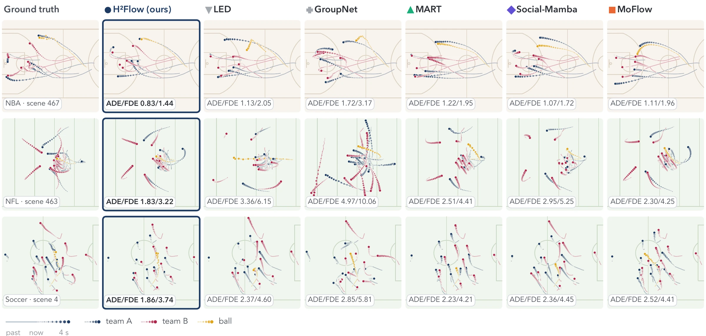

Hypothesis-conditioned groups: every hypothesis forms the groups of the future it predicts.

Contributions
- 1
Futures Define Groups
Each hypothesis forms its own groups from its estimated future and updates them as the flow refines that estimate.
- 2
Groups Shape Futures
Group tokens and a group-factorized endpoint couple interacting agents. A hyperedge-level winner-take-all loss selects a shared winner per group without group labels.
- 3
Accurate and Coherent Futures
Lowest trajectory errors among the methods evaluated on NBA and NFL at every level, from single agents to whole scenes.
Videos
Results
4.0 s horizon, 20 hypotheses. G3, Team, and Scene score each group with its best hypothesis: an agent and its two nearest neighbors, a team, or all agents.
Table 1 · NBAmin20ADE / FDE (m) at 4.0 s
Bold: lowest in the column; underlined: second lowest.
Table 2 · NBA over the horizonper-agent min20ADE / FDE (m)
| Method | Venue | 1.0 s | 2.0 s | 3.0 s | 4.0 s |
|---|---|---|---|---|---|
| MemoNet | CVPR'22 | 0.38/0.56 | 0.71/1.14 | 1.00/1.57 | 1.25/1.47 |
| NPSN | CVPR'22 | 0.35/0.58 | 0.68/1.23 | 1.01/1.76 | 1.31/1.79 |
| GroupNet | CVPR'22 | 0.21/0.32 | 0.42/0.67 | 0.66/0.98 | 0.89/1.22 |
| MID | CVPR'22 | 0.28/0.37 | 0.51/0.72 | 0.71/0.98 | 0.96/1.27 |
| LED-D | CVPR'23 | 0.21/0.28 | 0.44/0.64 | 0.69/0.95 | 0.94/1.21 |
| LED-I | CVPR'23 | 0.18/0.27 | 0.37/0.56 | 0.58/0.83 | 0.81/1.15 |
| DynGroupNet | NN'24 | 0.19/0.28 | 0.40/0.61 | 0.65/0.90 | 0.89/1.13 |
| MART | ECCV'24 | 0.18/0.26 | 0.36/0.51 | 0.54/0.72 | 0.74/0.92 |
| MoFlow | CVPR'25 | 0.18/0.25 | 0.33/0.46 | 0.51/0.67 | 0.70/0.88 |
| Social-Mamba | ECCV'26 | 0.17/0.25 | 0.34/0.50 | 0.53/0.72 | 0.73/0.92 |
| H²Flow | Ours | 0.17/0.25 | 0.33/0.45 | 0.49/0.64 | 0.67/0.84 |
Table 3 · Pedestriansmin20ADE / FDE at 4.8 s, ETH-UCY (m) and SDD (pixels)
| Method | ETH | Hotel | Univ | Zara1 | Zara2 | AVG | SDD |
|---|---|---|---|---|---|---|---|
| MID | .39/.66 | .13/.22 | .22/.45 | .17/.30 | .13/.27 | .21/.38 | 9.73/15.32 |
| GroupNet | .46/.73 | .15/.25 | .26/.49 | .21/.39 | .17/.33 | .25/.44 | 9.31/16.11 |
| LED | .39/.58 | .11/.17 | .26/.44 | .18/.26 | .13/.22 | .21/.33 | 8.48/11.66 |
| TUTR | .40/.61 | .11/.18 | .23/.42 | .18/.34 | .13/.25 | .21/.36 | 7.76/12.69 |
| EigenTraj | .36/.53 | .12/.19 | .24/.34 | .19/.33 | .14/.24 | .21/.33 | 8.05/13.25 |
| SingularTraj | .35/.42 | .13/.19 | .25/.44 | .19/.32 | .15/.25 | .21/.32 | 8.40/13.99 |
| MoFlow | .42/.59 | .12/.18 | .23/.40 | .17/.29 | .12/.22 | .21/.34 | 7.68/12.33 |
| Social-Mamba | .43/.79 | .19/.40 | .32/.60 | .18/.29 | .14/.23 | .25/.46 | 8.16/13.46 |
| H²Flow | .44/.64 | .12/.16 | .23/.41 | .16/.29 | .13/.22 | .22/.34 | 7.44/11.92 |
Its best configurations on ETH, Univ, Zara2, and SDD forecast each pedestrian alone, so these benchmarks mainly test the decoder.
Groups Follow Each Hypothesis's Future
On NBA, the 2–4 s groups of a hypothesis overlap most with the groups of its own predicted future. Without the hyperedge-level loss, Scene-min20ADE rises from 1.373 to 1.464 m.
Method

Hypothesis-conditioned groups
In every decoder block and flow step, each hypothesis groups agents by token similarity and by their distance in its own estimated future.
Group-factorized endpoint
Agents attend to the group tokens of their hypothesis, and each group adds a correction shared by its members.
Hyperedge-level winner-take-all
Each hyperedge keeps the hypothesis with the lowest error over its members, so interacting agents share a winner without group labels.
Interactive Demo
Run the flow from noise to forecast, or pick a hypothesis to see the groups of its own future.
Qualitative Results


BibTeX
@article{gan2026groups,
title = {Groups Shape Futures, Futures Define Groups: Hypothesis-Conditioned
Hypergraph Flow Matching for Collective Motion Forecasting},
author = {Gan, Rui and Liu, Jiaxi and Li, Zheng and Li, Sixu and Li, Zihao
and Wu, Keshu and Zhou, Yang and Li, Xiaopeng},
journal = {arXiv preprint},
year = {2026}
}